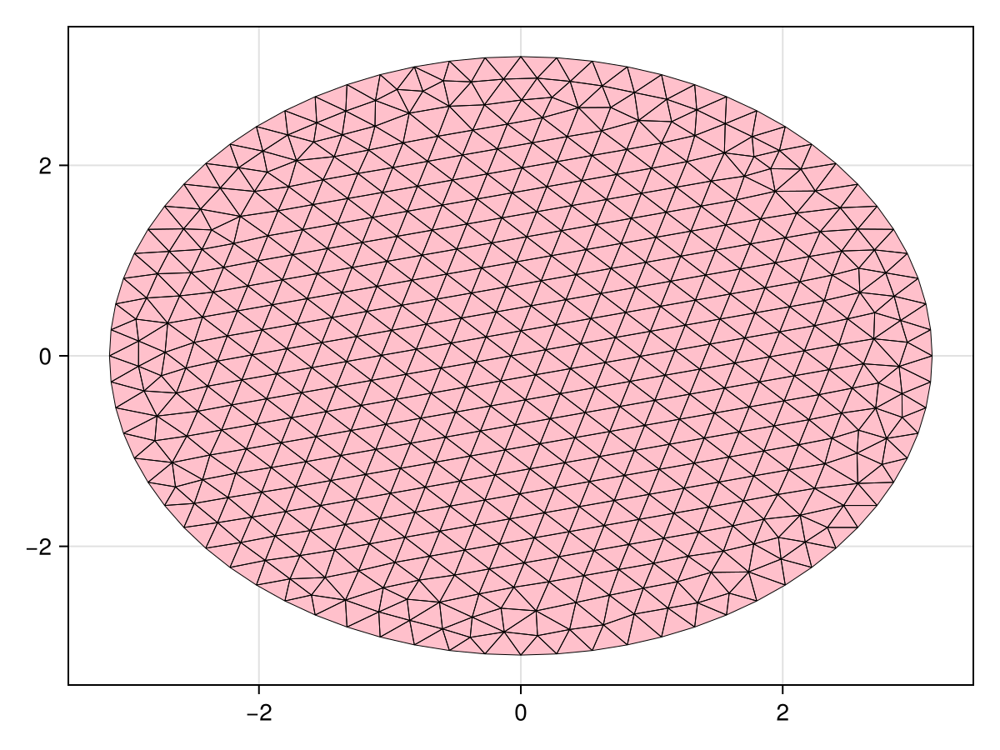
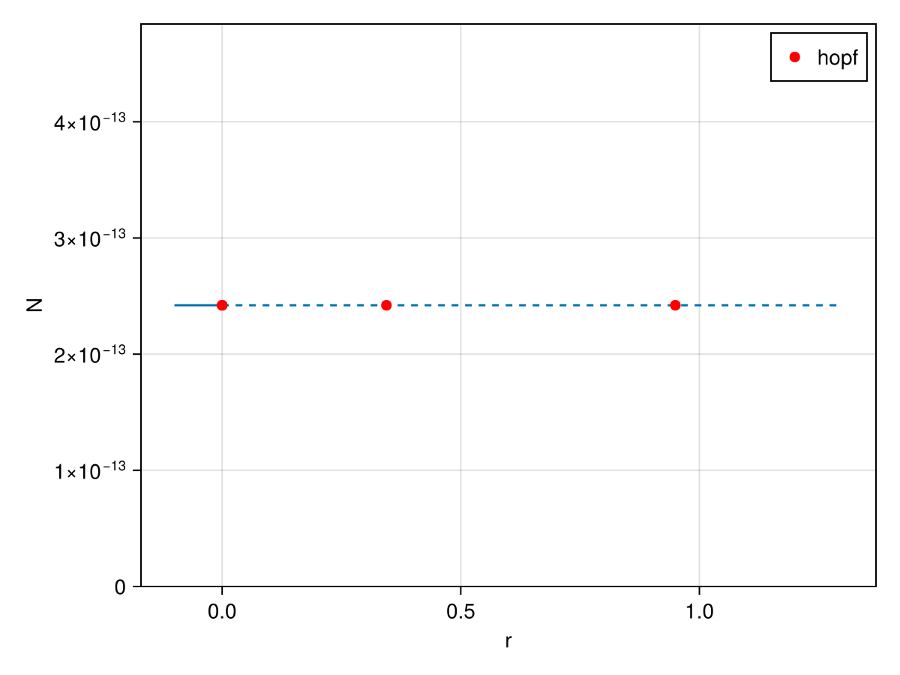

🟡 Complex Ginzburg–Landau: Hopf bifurcation, travelling and standing waves
We consider the cubic–quintic complex Ginzburg–Landau equation (CGE) on a disk $\Omega$ with homogeneous Neumann boundary conditions:
\[\partial_t A = r A + i\,\delta\,\nu\, A + \Delta A - (c_3 + i\mu)\,|A|^2 A - c_5 |A|^4 A,\]
where $A = u_1 + i u_2$ is a complex field. In addition, the advection term $s\,(-y\partial_x + x\partial_y)$ allows us to work in a comoving frame rotating with angular velocity $s$.
The trivial state $A\equiv 0$ is a solution for all $r$. We first continue it with respect to $r$ and detect Hopf bifurcations. The problem is equivariant under rotations (generated by $\partial_\theta = -y\partial_x + x\partial_y$) and under the phase symmetry $A\mapsto e^{i\phi}A$ (generator $iA$). Using these two symmetries, we then continue travelling waves (rotating solutions) and standing waves (pure oscillations) with the travelling wave functional of BifurcationKit.
using CairoMakieCairoMakie.activate!()using LinearAlgebrausing GridapGmshusing GridapGmsh: gmshusing GridapMakieusing Gridapusing Gridap.FESpacesusing GridapBifurcationKitusing BifurcationKitconst BK = BifurcationKitBK.set_plot_backend!(BK.BK_Makie()) # should not be neededamplitude(x) = maximum(x) - minimum(x)# plot a solution given its free dof values (first component only)function plotgridap!(ax, x::Vector; k...) uh = zero(X); uh.free_values .= x u1, _ = uh plotgridap!(ax, u1; k...)endplotgridap!(ax, x; k...) = plot!(ax, Ω, x)plotgridap(x; k...) = (f = Figure(); plotgridap!(Axis(f[1,1]), x; k...); f)plotgridap (generic function with 1 method)Building the disk mesh with Gmsh
We build the geometry of a disk of radius $\pi$ from four circle arcs and generate a 2d mesh:
function buildDisk(h::Float64, R, filename = "MyDisk-CGE.msh") gmsh.initialize() model = gmsh.model # center of the disk center = model.geo.addPoint(0, 0, 0, h, -1) # four points on the circle points = [] Nd = 4 for j in 1:Nd push!(points, model.geo.addPoint(R*cos(2*pi*j/Nd), R*sin(2*pi*j/Nd), 0, h)) end # four circle arcs lines = [] for j in 1:Nd push!(lines, model.geo.addCircleArc(points[j], center, points[j+1 < Nd+1 ? j + 1 : 1])) end # curve loop and surface curveloop = model.geo.addCurveLoop([1, 2, 3, 4]) disk = model.geo.addPlaneSurface([curveloop]) # synchronize CAD with the GMSH model gmsh.model.geo.synchronize() # physical groups t1 = gmsh.model.addPhysicalGroup(1, lines, 1) gmsh.model.addPhysicalGroup(2, [disk], 10) gmsh.model.setPhysicalName(1, t1, "boundary") # generate and write the mesh model.mesh.generate(2) gmsh.write(filename) gmsh.finalize()end# specify a rough number of triangles NbuildDisk(N::Int, R, filename = "MyDisk-CGE.msh") = buildDisk(√(2*R*pi/N), R, filename)buildDisk(250, pi)Info : Meshing 1D...
Info : [ 0%] Meshing curve 1 (Circle)
Info : [ 30%] Meshing curve 2 (Circle)
Info : [ 60%] Meshing curve 3 (Circle)
Info : [ 80%] Meshing curve 4 (Circle)
Info : Done meshing 1D (Wall 0.000209945s, CPU 0.000152s)
Info : Meshing 2D...
Info : Meshing surface 1 (Plane, Frontal-Delaunay)
Info : Done meshing 2D (Wall 0.00773873s, CPU 0.007738s)
Info : 530 nodes 1061 elements
Info : Writing 'MyDisk-CGE.msh'...
Info : Done writing 'MyDisk-CGE.msh'We then load the mesh in Gridap:
model = GmshDiscreteModel("MyDisk-CGE.msh")const Ω = Triangulation(model)num_cells(Ω)984and visualize the triangulation with GridapMakie:
fig = Figure()ax = Axis(fig[1, 1])plot!(ax, Ω)wireframe!(ax, Ω; color = :black, linewidth = 0.5)fig
FEM spaces
We use first order Lagrange elements for the two components $(u_1, u_2) = (\Re A, \Im A)$ of the complex field:
order = 1reffe = ReferenceFE(lagrangian, Float64, order)V = TestFESpace(model, reffe, conformity = :H1) # homogeneous natural (Neumann) BCU = TrialFESpace(V)# 2 fields: (u1, u2) = (Re A, Im A)Y = MultiFieldFESpace([V, V])const X = MultiFieldFESpace([U, U])degree = 2*orderconst dΩ = Measure(Ω, degree)GenericMeasure()Weak forms
Writing $A = u_1 + i u_2$ and $|A|^2 = u_1^2 + u_2^2$, the system reads
\[\begin{aligned} \partial_t u_1 &= r u_1 - \nu u_2 - |A|^2 (c_3 u_1 - \mu u_2) - c_5 |A|^4 u_1,\\ \partial_t u_2 &= r u_2 + \delta\nu u_1 - |A|^2 (c_3 u_2 + \mu u_1) - c_5 |A|^4 u_2. \end{aligned}\]
The mass matrix m0 makes the problem a (linear) differential-algebraic one, for which BifurcationKit automatically uses a generalized eigensolver. We also provide the weak forms of the two Lie generators, $\partial_\theta$ (rotation) and $i$ (phase):
# advection field of the comoving frame: (-y, x) = ∂θadv(x) = VectorValue(-x[2], x[1])function res((u1,u2), p, (v1,v2)) ua(U1, U2) = U1^2 + U2^2 f1(U1, U2) = p.r*U1 - p.ν*U2 - ua(U1,U2)*(p.c3*U1 - p.μ*U2) - p.c5*ua(U1,U2)^2*U1 f2(U1, U2) = p.r*U2 + (p.δ*p.ν)*U1 - ua(U1,U2)*(p.c3*U2 + p.μ*U1) - p.c5*ua(U1,U2)^2*U2 ∫( ( f1∘(u1,u2))*v1 + ( f2∘(u1,u2))*v2 - ∇(u1)⋅∇(v1) - ∇(u2)⋅∇(v2) - p.s*((adv⋅∇(u1))*v1 + (adv⋅∇(u2))*v2) )*dΩendfunction jac((u1,u2), p, (du1,du2), (v1,v2)) ua(X1, X2) = X1^2 + X2^2 d1f1(X1, X2) = p.r - 2X1*(p.c3*X1 - p.μ*X2) - p.c3*ua(X1,X2) - p.c5*(ua(X1,X2)^2 + 4X1^2*ua(X1,X2)) d2f1(X1, X2) = -p.ν - 2p.c3*X1*X2 + 2p.μ*X2^2 + p.μ*ua(X1,X2) - 4p.c5*ua(X1,X2)*X1*X2 d1f2(X1, X2) = p.δ*p.ν - 2p.c3*X1*X2 - 2p.μ*X1^2 - p.μ*ua(X1,X2) - 4p.c5*ua(X1,X2)*X1*X2 d2f2(X1, X2) = p.r - 2X2*(p.c3*X2 + p.μ*X1) - p.c3*ua(X1,X2) - p.c5*(ua(X1,X2)^2 + 4X2^2*ua(X1,X2)) ∫( ( (d1f1∘(u1,u2))*du1*v1 + (d2f1∘(u1,u2))*du2*v1 - ∇(du1)⋅∇(v1) + (d1f2∘(u1,u2))*du1*v2 + (d2f2∘(u1,u2))*du2*v2 - ∇(du2)⋅∇(v2) - p.s*((adv⋅∇(du1))*v1 + (adv⋅∇(du2))*v2) ) )*dΩend# mass matrix (identity on (u1, u2), nonsingular)m0((u1,u2), (v1,v2)) = ∫(u1*v1 + u2*v2)*dΩ# Lie generators: rotation ∂θ and phase iAgenerateur1((u1,u2), p, (du1,du2), (v1,v2)) = ∫( adv⋅∇(du1)*v1 + adv⋅∇(du2)*v2) * dΩgenerateur2((u1,u2), p, (du1,du2), (v1,v2)) = ∫( -du2*v1 + du1*v2 )*dΩ# L2-normalised norm of |A|function N2(x) u1 = zero(X) u1.free_values .= x n = sum(∫(u1[1]*u1[1]+u1[2]*u1[2])dΩ) s = sum(∫(1)dΩ) sqrt(n/s)endN2 (generic function with 1 method)Bifurcation problem and continuation of the trivial state
The Lie generators are assembled once, for later use in the travelling wave functional:
# parameterspar_cge = (r = -0.1, ν = 1.0, μ = 5., c3 = -1., c5 = 1.0, δ = 1.0, s = 0.0)# Lie generators as matricesGθ = Gridap.FESpaces.assemble_matrix((du, v) -> generateur1(zero(X), par_cge, du, v), X, Y)Gphase = Gridap.FESpaces.assemble_matrix((du, v) -> generateur2(zero(X), par_cge, du, v), X, Y)uh = zero(X); uh.free_values .= 0.01prob = GridapBifProblem(res, uh, par_cge, Y, X, dΩ, (@optic _.r); jac = jac, mass = m0, plot_solution = (ax, x, p; k...) -> plotgridap!(ax, x; k...), record_from_solution = (x, p; k...) -> (N = N2(x),))┌─ Gridap Bifurcation Problem with uType Vector{Float64}
├─ Inplace : false
├─ Dimension : 1058
├─ Parameter : r = -0.1
├─ Mass : ConstMass
├─ Jacobian : FullSparse (user)
├─ Derivatives : jac=user, d2res=FiniteDifferences, d3res=FiniteDifferences
├─ R01, R02, R11 : ("FiniteDifferences", "FiniteDifferences", "FiniteDifferences")
└─ Spaces: test = MultiFieldFESpace,
trial = MultiFieldFESpace
We continue the trivial state in $r$ and detect the Hopf bifurcations:
eig_gridap = BK.EigArnoldiMethod(sigma = 0.4, which = BK.LM())optn = BK.NewtonPar(eigsolver = eig_gridap)opts = BK.ContinuationPar(p_max = 1.3, p_min = -0.5, ds = 0.005, dsmax = 0.05, max_steps = 400, detect_bifurcation = 3, nev = 30, n_inversion = 8, newton_options = optn, plot_every_step = 2)br = BK.continuation(prob, BK.PALC(), opts) ┌─ Curve type: EquilibriumCont
├─ Number of points: 26
├─ Type of vectors: Vector{Float64}
├─ Parameter r starts at -0.1, ends at 1.3
├─ Algo: PALC [Secant]
└─ Special points:
- # 1, hopf at r ≈ +0.00000227 ∈ (-0.00000205, +0.00000227), |δp|=4e-06, [converged], δ = ( 2, 2), step = 6
- # 2, hopf at r ≈ +0.34428470 ∈ (+0.34428416, +0.34428470), |δp|=5e-07, [converged], δ = ( 2, 2), step = 11
- # 3, hopf at r ≈ +0.94964454 ∈ (+0.94964346, +0.94964454), |δp|=1e-06, [converged], δ = ( 2, 2), step = 20
- # 4, endpoint at r ≈ +1.30000000, step = 25
f, ax = BK.plot(br; dash_unstable_style = true)f
The normal form of the second Hopf point gives its frequency:
hopfpt = BK.get_normal_form(br, 2; start_with_eigen = Val(false), verbose = false, scaleζ = BK.norminf)SubCritical - Hopf bifurcation point at r ≈ 0.3442846984090524.
Frequency ω ≈ 0.9999999999999997
Period of the periodic orbit ≈ 6.283185307179588
Normal form z⋅(iω + a⋅δr + b⋅|z|²):
┌─ a = 0.99999983338942 - 1.1237103199347774e-9im
└─ b = 2.4644272396534976 + 12.320837557688767im
Travelling waves aka spiral waves
Because of the rotation equivariance, the Hopf bifurcation points on the trivial branch are also bifurcations to travelling waves, i.e. solutions of the form $A(x,t) = e^{i\omega t} U(x - s\,t)$. Equivalently, these are equilibria $(U, s)$ of the problem in the comoving frame with the phase condition $\langle U - U_0, \partial_\theta U_0\rangle = 0$ and the wave speed $s$ as an additional unknown. This is what TWModel implements, given the generator Gθ. We build an initial guess for the wave from the Hopf eigenvectors with guessFromHopfO2:
function guessFromHopfO2(branch, ind_hopf, eigsolver, M, A, B = 0.; G = (I, I), phase = 0, k = 1.) specialpoint = branch.specialpoint[ind_hopf] # parameter value at the Hopf point p = specialpoint.param ind_ev = specialpoint.ind_ev eigenvecs = branch.eig[specialpoint.idx].eigenvecs # frequency at the Hopf point ωH = imag(branch.eig[specialpoint.idx].eigenvals[ind_ev]) |> abs # eigenvectors for the eigenvalues iω ξ0 = geteigenvector(eigsolver, eigenvecs, ind_ev) |> real ξ0b = geteigenvector(eigsolver, eigenvecs, ind_ev) |> imag ξ1 = geteigenvector(eigsolver, eigenvecs, ind_ev - 2) |> real ξ1b = geteigenvector(eigsolver, eigenvecs, ind_ev - 2) |> imag basis0 = (ξ0, ξ0b, ξ1, ξ1b) m = 1 ζ0 = basis0[1] ζ0b = G[1] * ζ0 ./ m ζ1 = basis0[3] ζ1b = -G[1] * ζ1 ./ m ζ0 = ζ0 + im .* ζ0b ζ1 = ζ1 + im .* ζ1b ζ1 = G[2] * (ζ0) ζ0 ./= norm(ζ0) ζ1 ./= norm(ζ1) orbitguess = [real.(specialpoint.x .+ A .* ζ0 .* cis(t - phase) .+ B .* ζ1 .* cis(t - phase)) for t in LinRange(0,2pi,M+1)[1:end-1]] return (; p, period = 2pi/ωH, guess = orbitguess, x0 = specialpoint.x, ζ0, ζ1, ω = ωH)endguessFromHopfO2 (generic function with 2 methods)M = 10 # number of time slices (for plotting purposes)
pred = guessFromHopfO2(br, 2, optn.eigsolver, M, 40*(1+im), 0*(1+im); k = 2, G = (Gθ, Gphase))
r_hopf = pred.p; ωH = pred.ω; orbitguess_tw = pred.guess
u_ref = copy(orbitguess_tw[1][1:length(prob.u0)])
probTW = BK.TWModel(BK.re_make(prob, params = (par_cge..., r = r_hopf - 0.1)),
Gθ,
u_ref;
DAE = [false],
jacobian = BK.FullLU())We freeze the travelling wave with a Newton solver, using the Hopf frequency ωH as initial guess for the wave speed $-s$:
wave = BK.newton(probTW, vcat(u_ref, -ωH),
BK.NewtonPar(max_iterations = 70, tol = 1e-9),
normN = norminf)
println("s = ", wave.u[end], ", ||u||₂ = ", N2(wave.u[1:end-probTW.nc]))
plotgridap(wave.u[1:end-probTW.nc])We then continue the travelling wave as a function of $r$:
opt_cont_br = BK.ContinuationPar(p_min = -2.0,
p_max = 1.2,
newton_options = optn,
ds = 0.005,
dsmax = 0.04,
detect_bifurcation = 3,
nev = 20,
n_inversion = 8,
tol_stability = 1e-4,
plot_every_step = 2,
max_steps = 150)
br_TW = BK.continuation(probTW, deepcopy(wave.u), BK.PALC(tangent = BK.Bordered()), opt_cont_br;
eigsolver = BK.GEigenWave(br.contparams.newton_options.eigsolver, false),
record_from_solution = (x, p; k...) -> (max = maximum(x[1:end-probTW.nc]), nrm = norm(x[1:end-probTW.nc]), s = x[end], amp = amplitude(x[1:end-probTW.nc])),
plot_solution = (ax, x, p; ax1, k...) -> plotgridap!(ax, x[1:end-probTW.nc]; k...),
finalise_solution = (z, tau, step, contResult; k...) -> N2(z.u[1:end-probTW.nc]) > 0.01,
verbosity = 0,
normC = norminf,
bothside = true,
plot = false)f, ax = BK.plot(br_TW, vars = (:param, :nrm))
BK.plot!(ax, br)
fHere is an example of spiral wave:
plotgridap(br_TW.sol[10].x[1:end-probTW.nc])Standing waves
Using the phase symmetry $A \mapsto e^{i\phi}A$ instead of the rotation, the same travelling wave functional computes standing waves $A(x,t) = e^{i\omega t}U(x)$:
pred = guessFromHopfO2(br, 2, optn.eigsolver, M, 2*(1+0im), 0*(1+im); k = 1, G = (Gθ, Gphase))
u_ref = copy(pred.guess[1][1:length(prob.u0)])
probSW = BK.TWModel(BK.re_make(prob, params = (par_cge..., r = pred.p - 0.01)),
Gphase,
deepcopy(u_ref);
DAE = [0],
update_section_every_step = 1,
jacobian = BK.FullLU())The standing wave is frozen with a Newton solver:
optn = BK.NewtonPar(max_iterations = 40, tol = 1e-10)
wave_sw = BK.newton(probSW, vcat(u_ref, pred.ω), optn, normN = norminf)
println("ω = ", wave_sw.u[end], ", ||u||₂ = ", N2(wave_sw.u[1:end-probSW.nc]))
plotgridap(wave_sw.u[1:end-probSW.nc])and continued as a function of $r$, starting backward from the Hopf point:
opt_cont_br = BK.ContinuationPar(p_min = -1.5,
p_max = 1.,
newton_options = BK.NewtonPar(optn, max_iterations = 5),
ds = -0.005,
dsmax = 0.05,
detect_bifurcation = 3,
nev = 10,
n_inversion = 6,
tol_stability = 1e-3,
plot_every_step = 2,
max_steps = 120)
br_SW = BK.continuation(probSW,
deepcopy(wave_sw.u),
BK.AutoSwitch(BK.PALC(tangent = BK.Secant()), 0.3),
opt_cont_br;
eigsolver = BK.GEigenWave(br.contparams.newton_options.eigsolver, false),
record_from_solution = (x, p; k...) -> (max = maximum(x[1:end-probSW.nc]), nrm = norm(x[1:end-probSW.nc]), s = x[end], amp = amplitude(x[1:end-probSW.nc])),
plot_solution = (ax, x, p; ax1, k...) -> plotgridap!(ax, x[1:end-probSW.nc]; k...),
finalise_solution = (z, tau, step, contResult; k...) -> N2(z.u[1:end-probSW.nc]) > 0.02,
normC = norminf,
verbosity = 0,
plot = false
)Finally, we compare the trivial branch, the travelling waves and the standing waves:
f, ax = BK.plot(br_SW, br_TW, vars = (:param, :nrm), branchlabel = ["SW", "TW"])
BK.plot!(ax, br)
f